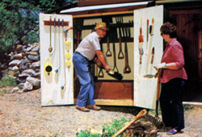
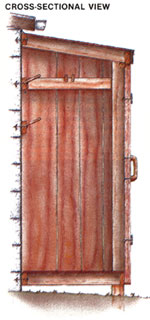
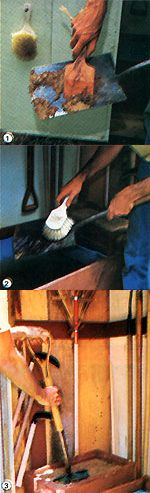

Good tools are a gardener's best friend-unless, that is, the tools never seem to be close at hand when you need them!
Such was the situation not long ago at MOTHER's one-acre self-reliant homestead. It's true we're pleased with our progress so far in applying the principles of permaculture-in which all elements work together in mutual support. But we realized one day, when retrieving a tool (for the umpteenth time!) from one of our beds behind the house so we could use it in the herb bed in front, that there was a missing cog in our otherwise nicely turning wheel. We needed a single, central place in which to maintain and store our garden tools.
The small, closetlike shed you see here solved that problem. Though its construction is conventional, it has some interesting, unusual features: The horizontal barrel bin is used both for cleaning tools and for soaking flats of seedlings (which are often best and most easily watered from below). And the sand bin contains a mixture of coarse sand and vegetable oil in which tools are plunged for rust protection before hanging them up for the day (see the photos).
The real key to our shed's usefulness, though, is its location: a high-traffic area at the west end of the house, close to the kitchen door and against an otherwise unused wall-a place that we pass whenever we're walking to or from just about anywhere else on the homestead. So getting, cleaning, or putting back a tool no longer requires a special trip; we just stop at the shed on our way to wherever we're going.
Because our shed's design is site-specific, and since the ideal location for such a structure on your property will surely be different (for example, you might need to build a freestanding unit), we won't attempt to give you detailed plans here. Instead, we'll just recount the major construction and design features of our add-on shed, and leave it up to you to adapt our ideas to your situation.
The dimensions of the concrete block wall on which we'd decided to build the shed essentially determined the structure's height and width-and since we planned to include a barrel bin for cleaning tools, we allowed more than enough depth to accommodate that. We also wanted to give the shed's roof a 2-in-12 pitch, to match that of the house.
Keeping those parameters in mind, we attached a 4' 6"-long 2 X 4 roof nailer flush across the top of the wall beneath the eaves, using three equally spaced 6" molly bolts to secure the board to the block. Then we built the floor frame-basically a box-for the shed, using a 5'-long 2 X 4 for each front and back nailer, and five 2' 3-1/2"-long 2 X 4s, spaced 16" on center, for the joists.
With the floor box completed, we attached it to the wall, again using 6" molly bolts to secure the inside nailer to the block. Then we dug a 6"-deep posthole at each outside front corner. While one person held the front of the floor frame, we used a level to plumb the right corner post-a 7' treated 2 X 4.
After checking to be sure the upright was perpendicular, we held a 2 X 4 in place between the outside of the top nailer and the inside of the upright, scribed a line where the 2 X 4 extended past the post, and cut the board there to form the first rafter (it measured 2' 4-3/4"). Then we used that rafter as a template to cut three more roof supports. With that done, we again held the floor and corner post so they were level and plumb, backfilled the post, nailed the floor and upright together, and toenailed the outer rafter in position between the nailer and upright.
We repeated the process to erect the left corner post and rafter, and then we nailed a 5'-long 2 X 4 header across the outside ends of the rafters. Next, we installed the remaining two rafters, spacing one 24" from the left rafter and the other 24" from the right. Then on each side we put a shorter (2' 1-1/4") 2 X 4, with one end butted against the corner post and the other end affixed to the outside of the top nailer.
At that point, the shed was pretty much framed in. We installed a 30" X 60" piece of 3/4" plywood for the floor, and enclosed the end walls (plus the first six inches on either side of the shed's front) with 3/4" rough-sawn white pine siding milled from trees on the Eco-Village property. Then, after securing 1 X 4 fascia board across the header and on each side, we nailed down the roof-a 32" X 60" sheet of 1/2" plywood-and covered it with asphalt roll roofing. A metal drip edge attached to the fascia on all three sides further protects the shed.
The twin 24" X 56" doors were made of two layers of 3/4"-rough-sawn siding nailed together, with the overlay boards arranged in a herringbone pattern to provide bracing and visual interest and with 1 X 2 trim applied to the doors' edges. We nailed a 1 X 4 trim board flush to the edge of the doorway on each side, installed a 2 X 2 door jam, and hung each door on a pair of T-hinges secured to the trim. A 4" hasp lock and a handle carved from a block of native cedar completed the basic shed.
To make maximum use of the structure's available space, we made racks on all three walls of the shed for hanging tools and other implements. On the back wall, where the heaviest tools would be stored, two parallel horizontal 2 X 4s-spaced 10" apart-were molly-bolted to the concrete block and drilled to receive 6"-long 5/8" dowel sections, which we positioned and glued in place to serve as holders for our shovels and forks.
Likewise, we nailed a 1 X 4 across each sidewall and affixed 5/8" dowel tool-holders . . . then, on the inside of each door, we installed 1/4" dowels to hold lighter implements such as brushes and hose attachments.
To make the barrel bin, we cut a polyethylene 55-gallon drum (obtained from a local cider mill) in half lengthwise with a saber saw, and then, using scrap lumber, built a box large enough to hold one of the halves. Then we simply built another scrap-wood box-the sand bin-to fit the amount of space that would remain after we'd set the barrel bin in the shed.
We filled the smaller container with sand mixed with enough vegetable oil to give it the consistency of soft, moist brown sugar . . . gave the shed a coat of paint (and stained the dowel racks) . . . put the sand and barrel bins in place . . . and hung our tools in their new home. At last: organization where chaos once reigned!
|
 Caring for garden tools in three steps: [1] Caked earth is removed with a wooden scraper. [2] The implement is scrubbed clean in the barrel bin with a brush. [3] The tool is plunged into a mixture of sand and vegetable oil to prevent rust. |
 |
 |